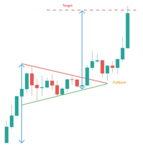

- Figures chartistes : Fanion et Drapeau -
Le Fanion ou Pennant
Le fanion (ou pennant) est une figure chartiste de continuation qui ressemble beaucoup au triangle symétrique, mais ses caractéristiques sont différentes.
Cette figure chartiste apparait généralement à la suite d'un mouvement brusque à la hausse ou à la baisse.
La durée de vie d'un fanion est courte selon le timeframe.
Le sens de sortie d'une figure en fanion dépend du mouvement qui l'a précédé.
L'objectif de cours d'un fanion se calcule par rapport à la tendance ayant précédé sa formation. Génaralement, on reporte la hauteur complète du mouvement ayant précédé la formation du fanion au dernier point bas/haut de la figure.
75% la sortie du fanion s'effectue dans le même sens que le mouvement ayant précédé sa formation.
90% le fanion est une figure de continuation.
55% l'objectif de cours de la figure en fanion est atteint.
16% le cours effectue un pullback sur le fanion après sortie.
- Plus le mouvement ayant précédé la formation du fanion est puissant, plus le mouvement après sortie du fanion sera puissant.
- Un fanion avec une base resserée est plus performant qu'un fanion avec une base large
- Un fanion est plus puissant s'il n'y a pas de fausses cassures (fausses sorties de la figure).
- Les pullbacks après sortie du fanion sont néfastes pour la performance de la figure.
Le Drapeau
Le drapeau (flag) est une figure de continuation. Il est formé par deux droites parallèles orientées dans le sens inverse de la tendance qu’il consolide; Contrairement à un canal haussier, cette figure est très court terme et marque le besoin des vendeurs de faire une pause. Le plus souvent, cette pause intervient à mi chemin du mouvement.
Le calcul de l’objectif se fait par rapport à la tendance initiale. On calcul la hauteur de l’ensemble du mouvement ayant précédé la formation du drapeau puis on reporte cette hauteur sur le dernier point de la figure. Plus le mouvement précédent la formation du drapeau est puissant, plus le mouvement suivant la sortie baissière sera puissant
87% il y a une sortie dans le sens du mouvement précédant la figure
90% il s'agit d'une figure de continuation
62% l’objectif de la figure est atteint
10% un pullback intervient sur la résistance
76% des drapeaux interviennent dans le 1/3 supérieur du mouvement haussier global
- La performance d'un drapeau est beaucoup moins importante lorsque celui ci est orienté dans le sens de la tendance
- Un drapeau avec des droites resserées est plus performant qu'un drapeau aux bandes écartées
- Un drapeau est plus puissant s'il n'y a pas de fausses cassures
- Les pullbacks sont néfastes pour la performance de la figure